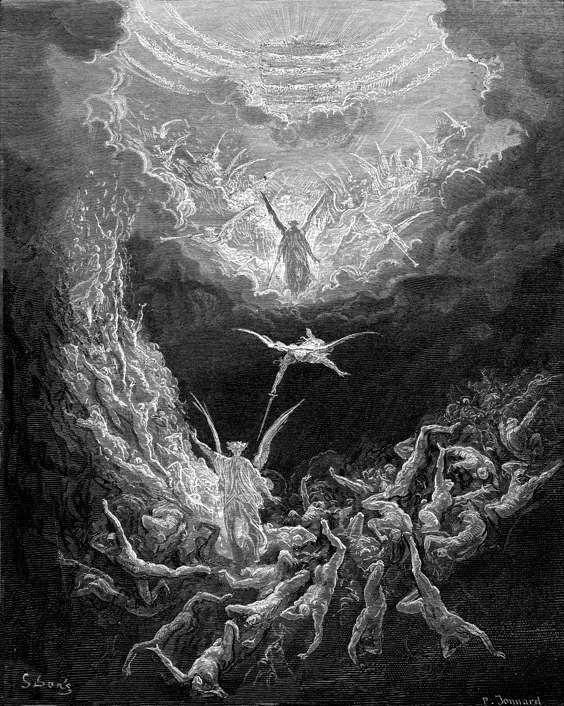
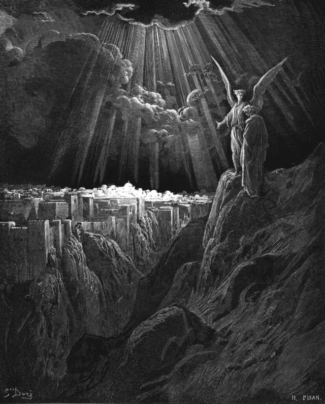

Revelation 19–22
19
And after these things I heard a great voice of much people in heaven, saying, Alleluia; Salvation, and glory, and honour, and power, unto the Lord our God:
For true and righteous are his judgments: for he hath judged the great whore, which did corrupt the earth with her fornication, and hath avenged the blood of his servants at her hand.
And again they said, Alleluia. And her smoke rose up for ever and ever.
And the four and twenty elders and the four beasts fell down and worshipped God that sat on the throne, saying, Amen; Alleluia.
And a voice came out of the throne, saying, Praise our God, all ye his servants, and ye that fear him, both small and great.
And I heard as it were the voice of a great multitude, and as the voice of many waters, and as the voice of mighty thunderings, saying, Alleluia: for the Lord God omnipotent reigneth.
Let us be glad and rejoice, and give honour to him: for the marriage of the Lamb is come, and his wife hath made herself ready.
And to her was granted that she should be arrayed in fine linen, clean and white: for the fine linen is the righteousness of saints.
And he saith unto me, Write, Blessed are they which are called unto the marriage supper of the Lamb. And he saith unto me, These are the true sayings of God.
And I fell at his feet to worship him. And he said unto me, See thou do it not: I am thy fellowservant, and of thy brethren that have the testimony of Jesus: worship God: for the testimony of Jesus is the spirit of prophecy.
And I saw heaven opened, and behold a white horse; and he that sat upon him was called Faithful and True, and in righteousness he doth judge and make war.
His eyes were as a flame of fire, and on his head were many crowns; and he had a name written, that no man knew, but he himself.
And he was clothed with a vesture dipped in blood: and his name is called The Word of God.
And the armies which were in heaven followed him upon white horses, clothed in fine linen, white and clean.
And out of his mouth goeth a sharp sword, that with it he should smite the nations: and he shall rule them with a rod of iron: and he treadeth the winepress of the fierceness and wrath of Almighty God.
And he hath on his vesture and on his thigh a name written, KING OF KINGS, AND LORD OF LORDS.
And I saw an angel standing in the sun; and he cried with a loud voice, saying to all the fowls that fly in the midst of heaven, Come and gather yourselves together unto the supper of the great God;
That ye may eat the flesh of kings, and the flesh of captains, and the flesh of mighty men, and the flesh of horses, and of them that sit on them, and the flesh of all men, both free and bond, both small and great.
And I saw the beast, and the kings of the earth, and their armies, gathered together to make war against him that sat on the horse, and against his army.
And the beast was taken, and with him the false prophet that wrought miracles before him, with which he deceived them that had received the mark of the beast, and them that worshipped his image. These both were cast alive into a lake of fire burning with brimstone.
And the remnant were slain with the sword of him that sat upon the horse, which sword proceeded out of his mouth: and all the fowls were filled with their flesh.
20
And I saw an angel come down from heaven, having the key of the bottomless pit and a great chain in his hand.
And he laid hold on the dragon, that old serpent, which is the Devil, and Satan, and bound him a thousand years,
And cast him into the bottomless pit, and shut him up, and set a seal upon him, that he should deceive the nations no more, till the thousand years should be fulfilled: and after that he must be loosed a little season.
And I saw thrones, and they sat upon them, and judgment was given unto them: and I saw the souls of them that were beheaded for the witness of Jesus, and for the word of God, and which had not worshipped the beast, neither his image, neither had received his mark upon their foreheads, or in their hands; and they lived and reigned with Christ a thousand years.
But the rest of the dead lived not again until the thousand years were finished. This is the first resurrection.
Blessed and holy is he that hath part in the first resurrection: on such the second death hath no power, but they shall be priests of God and of Christ, and shall reign with him a thousand years.
And when the thousand years are expired, Satan shall be loosed out of his prison,
And shall go out to deceive the nations which are in the four quarters of the earth, Gog, and Magog, to gather them together to battle: the number of whom is as the sand of the sea.
And they went up on the breadth of the earth, and compassed the camp of the saints about, and the beloved city: and fire came down from God out of heaven, and devoured them.
And the devil that deceived them was cast into the lake of fire and brimstone, where the beast and the false prophet are, and shall be tormented day and night for ever and ever.

And I saw a great white throne, and him that sat on it, from whose face the earth and the heaven fled away; and there was found no place for them.
And I saw the dead, small and great, stand before God; and the books were opened: and another book was opened, which is the book of life: and the dead were judged out of those things which were written in the books, according to their works.
And the sea gave up the dead which were in it; and death and hell delivered up the dead which were in them: and they were judged every man according to their works.
And death and hell were cast into the lake of fire. This is the second death.
And whosoever was not found written in the book of life was cast into the lake of fire.
21
And I saw a new heaven and a new earth: for the first heaven and the first earth were passed away; and there was no more sea.
And I John saw the holy city, new Jerusalem, coming down from God out of heaven, prepared as a bride adorned for her husband.
And I heard a great voice out of heaven saying, Behold, the tabernacle of God is with men, and he will dwell with them, and they shall be his people, and God himself shall be with them, and be their God.
And God shall wipe away all tears from their eyes; and there shall be no more death, neither sorrow, nor crying, neither shall there be any more pain: for the former things are passed away.
And he that sat upon the throne said, Behold, I make all things new. And he said unto me, Write: for these words are true and faithful.
And he said unto me, It is done. I am Alpha and Omega, the beginning and the end. I will give unto him that is athirst of the fountain of the water of life freely.
He that overcometh shall inherit all things; and I will be his God, and he shall be my son.
But the fearful, and unbelieving, and the abominable, and murderers, and whoremongers, and sorcerers, and idolaters, and all liars, shall have their part in the lake which burneth with fire and brimstone: which is the second death.
And there came unto me one of the seven angels which had the seven vials full of the seven last plagues, and talked with me, saying, Come hither, I will shew thee the bride, the Lamb’s wife.

And he carried me away in the spirit to a great and high mountain, and shewed me that great city, the holy Jerusalem, descending out of heaven from God,
Having the glory of God: and her light was like unto a stone most precious, even like a jasper stone, clear as crystal;
And had a wall great and high, and had twelve gates, and at the gates twelve angels, and names written thereon, which are the names of the twelve tribes of the children of Israel:
On the east three gates; on the north three gates; on the south three gates; and on the west three gates.
And the wall of the city had twelve foundations, and in them the names of the twelve apostles of the Lamb.
And he that talked with me had a golden reed to measure the city, and the gates thereof, and the wall thereof.
And the city lieth foursquare, and the length is as large as the breadth: and he measured the city with the reed, twelve thousand furlongs. The length and the breadth and the height of it are equal.
And he measured the wall thereof, an hundred and forty and four cubits, according to the measure of a man, that is, of the angel.
And the building of the wall of it was of jasper: and the city was pure gold, like unto clear glass.
And the foundations of the wall of the city were garnished with all manner of precious stones. The first foundation was jasper; the second, sapphire; the third, a chalcedony; the fourth, an emerald;
The fifth, sardonyx; the sixth, sardius; the seventh, chrysolyte; the eighth, beryl; the ninth, a topaz; the tenth, a chrysoprasus; the eleventh, a jacinth; the twelfth, an amethyst.
And the twelve gates were twelve pearls: every several gate was of one pearl: and the street of the city was pure gold, as it were transparent glass.
And I saw no temple therein: for the Lord God Almighty and the Lamb are the temple of it.
And the city had no need of the sun, neither of the moon, to shine in it: for the glory of God did lighten it, and the Lamb is the light thereof.
And the nations of them which are saved shall walk in the light of it: and the kings of the earth do bring their glory and honour into it.
And the gates of it shall not be shut at all by day: for there shall be no night there.
And they shall bring the glory and honour of the nations into it.
And there shall in no wise enter into it any thing that defileth, neither whatsoever worketh abomination, or maketh a lie: but they which are written in the Lamb’s book of life.
22
And he shewed me a pure river of water of life, clear as crystal, proceeding out of the throne of God and of the Lamb.
In the midst of the street of it, and on either side of the river, was there the tree of life, which bare twelve manner of fruits, and yielded her fruit every month: and the leaves of the tree were for the healing of the nations.
And there shall be no more curse: but the throne of God and of the Lamb shall be in it; and his servants shall serve him:
And they shall see his face; and his name shall be in their foreheads.
And there shall be no night there; and they need no candle, neither light of the sun; for the Lord God giveth them light: and they shall reign for ever and ever.
And he said unto me, These sayings are faithful and true: and the Lord God of the holy prophets sent his angel to shew unto his servants the things which must shortly be done.
Behold, I come quickly: blessed is he that keepeth the sayings of the prophecy of this book.
And I John saw these things, and heard them. And when I had heard and seen, I fell down to worship before the feet of the angel which shewed me these things.
Then saith he unto me, See thou do it not: for I am thy fellowservant, and of thy brethren the prophets, and of them which keep the sayings of this book: worship God.
And he saith unto me, Seal not the sayings of the prophecy of this book: for the time is at hand.
He that is unjust, let him be unjust still: and he which is filthy, let him be filthy still: and he that is righteous, let him be righteous still: and he that is holy, let him be holy still.
And, behold, I come quickly; and my reward is with me, to give every man according as his work shall be.
I am Alpha and Omega, the beginning and the end, the first and the last.
Blessed are they that do his commandments, that they may have right to the tree of life, and may enter in through the gates into the city.
For without are dogs, and sorcerers, and whoremongers, and murderers, and idolaters, and whosoever loveth and maketh a lie.
I Jesus have sent mine angel to testify unto you these things in the churches. I am the root and the offspring of David, and the bright and morning star.
And the Spirit and the bride say, Come. And let him that heareth say, Come. And let him that is athirst come. And whosoever will, let him take the water of life freely.
For I testify unto every man that heareth the words of the prophecy of this book, If any man shall add unto these things, God shall add unto him the plagues that are written in this book:
And if any man shall take away from the words of the book of this prophecy, God shall take away his part out of the book of life, and out of the holy city, and from the things which are written in this book.
He which testifieth these things saith, Surely I come quickly. Amen. Even so, come, Lord Jesus.
The grace of our Lord Jesus Christ be with you all. Amen.